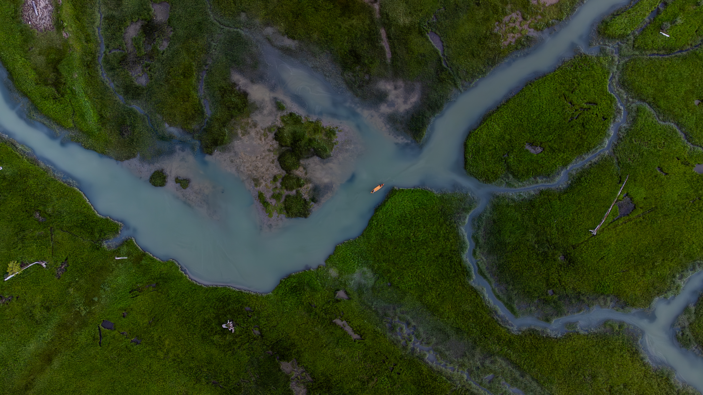

Photo submitted by a guestSea to Sky
Local guides from the team that delivers boats to your launch.
Latest Posts
Glassy water, low sun and snow-capped peaks: the best time to be in a canoe around Squamish is the hour either side of the sun.
Read GuideFrom dry bags to dog treats: the packing list we hand to first-time renters, with the reasons behind each item.
Read GuideReflections, low light and wide-open mountains make the Sea to Sky a great place to shoot. Here's how to do it without losing your phone to the lake.
Read GuideNever been in a canoe? Here's how to get in, where to sit, which strokes to use, and how to steer, so your first paddle is a good one.
Read GuideBoth are great days on the water. Here's how to choose between a canoe and a stand-up paddleboard for your Squamish or Whistler trip.
Read GuideCalm lakes, short paddles and plenty of snacks: how to plan a family canoe or paddleboard day that everyone (including the dog) enjoys.
Read GuideAlice, Cat, Brohm and Browning lakes, the Estuary and Howe Sound: where to canoe or SUP in Squamish, and who each spot suits.
Read GuideQuiet lakes and fresh snow on the peaks: how to paddle safely in cold water, what to wear and where to go in autumn.
Read GuideThe paddle-then-climb adventure to one of Squamish's most underrated alpine lakes. Full guide to the river crossing, the trail, gear, and timing.
Read GuideThe classic Whistler paddle from Alta Lake to Green Lake. Route, shuttle, canoe vs SUP advice, timing, and safety notes.
Read Guide